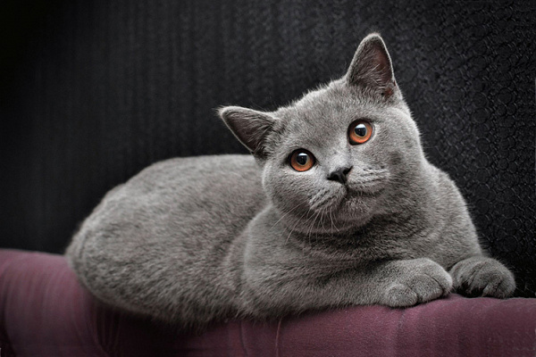

Характер
Британская короткошерстная кошка — идеальный домашний питомец для тех, кто любит покой и тишину. Представители этой породы — настоящие английские аристократы, которые ни за что не позволят себе слишком активных игр и пустого бега по квартире.
Взрослый британец — образец серьезности, независимости и сдержанности. Вместе с тем котята этой породы достаточно активны и любопытны, поэтому нуждаются в воспитании с самого рождения.
Британские короткошерстные кошки прекрасно подходят людям, которые не привыкли проводить слишком много времени дома. Эти кошки не будут страдать и грустить в отсутствие человека. Однако это вовсе не говорит о том, что они не любят своего хозяина. Наоборот, в отличие от многих других представителей кошачьих, британцы привязываются ко всем членам семьи, не делая исключений.
Несмотря на независимость, британская короткошерстная кошка требует к себе внимания. И жестоко наказывает владельца, который не уделяет ей такового. С британцем необходимо играть, разговаривать и, конечно, ласкать и гладить. Но делать это стоит только тогда, когда у кошки будет настроение. Иначе бестактное поведение может быть расценено как попытка нарушить устоявшиеся правила общения и личное пространство питомца.
Чистокровный британец очень хорошо уживается с другими животными, в том числе с собаками, благодаря уравновешенности характера и интеллекту. Эти кошки отлично ладят с детьми, и, если в семье есть ребенок, вероятнее всего, именно к нему британец будет относиться лояльнее всех.
Уход
Достоинство британцев — их шуба, густая и мягкая. Это благодаря тому, что шерсть и подшерсток у них одинаковой длины. Чтобы сохранить ее прекрасный вид, необходимо ежедневно вычесывать кошку с помощью специальных щеток с натуральной щетиной. В период линьки регулярность расчесывания увеличивают до двух раз в день. Британские кошки этот процесс любят, причем даже не сопротивляются при движении против шерсти.
Если не уделять должного внимания уходу за шерстью, выпавшие волоски при вылизывании попадут внутрь организма кошки, что чревато развитием заболеваний пищеварительной системы.
Условия содержания
Британские кошки, активность которых достаточно умеренна, все же нуждаются в физических нагрузках. Тем более что эта порода склонна к полноте. С кошками необходимо играть, а также контролировать их питание. Кормить британскую короткошерстную рекомендуется промышленным кормом, соблюдая порционность. Кошки этой породы — отличные охотники, поэтому питомцу можно установить многоярусный домик с различными игрушками.
Вопросы о своей британской короткошерстной вы можете задать квалифицированному ветеринару онлайн в мобильном приложении Petstory всего за 199 рублей вместо 399 рублей (акция действует только на первую консультацию)! Скачайте приложение или прочитайте подробнее о сервисе.